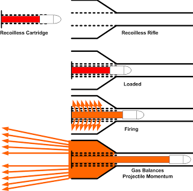
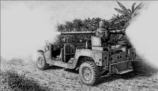
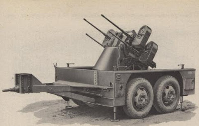

Vanderboegh: The Quarry
Quarry
A Chapter of 'Absolved'
by Mike Vanderboegh
Inner Circle
Jack Durer's Living Room, Prattville, Alabama
Three weeks after the Winston County Massacre
The Adjutant General of the State of Alabama was unhappy. He didn't like the informal place of this meeting, he didn't like Jack Durer and he didn't like the way events were pushing him.
He was painfully aware that he was a man very much in the middle. He'd had a long conversation two nights ago with the Secretary of Defense of the United States, a conversation he wasn't about to mention to the Governor. The SecDef had made it plain -- the Adjutant General had sworn his first oath to the United States, not to the state of Alabama -- and that in a federal system, it was the nation which came first. Something else was made plain to him -- his Army pension was on the line if he didn't play ball with Washington. Ray Marsh was a long-time friend and philosophically the Adjutant General was right there with the Governor.
But not if he had to work as a greeter at WalMart to pay the bills.
This morning, he had met with the FBI man who had been designated as his contact and had passed over documents detailing what he knew about the shipment of Taiwanese arms now sitting, he thought, at the Mobile Docks. God, how many federal laws would be broken if Ray Marsh got involved in that?
He looked up from the coffee table at his feet to see Jack Durer standing across the room, murmuring to Billy Mitchell. Only Durer wasn't looking at the Director of the Department of Public Safety as he spoke, he was looking at . . . me, the Adjutant General realized with a start. And at that moment, Jack Durer did something even more unsettling.
He winked.
The SOB just winked at me. What's that bastard up to now?
The Governor came in from the sewing room, where he had been on his knees praying for guidance.
"Gentlemen, thank you all for coming. I apologize for the setting, but it was vital that these conversations remain confidential, and my official offices in Montgomery are now all wired for sound by the federal authorities. So are my private residences, in both Montgomery and at home."
The Governor nodded at the Attorney General, who was sitting on the other end of the couch from the Adjutant General, "Robert has advised me to leave them in place, as has Jack Durer, each for their own arcane reasons. As we said before, please keep this in mind when calling or visiting me."
Ray Marsh's attention fixed on the Adjutant General. "General Baxter, would you start us out by giving us your report on the various National Guard elements and how they would react to being federalized?"
This was the topic he had been told was the subject of this meeting. He didn't believe it. The earth was moving under their feet -- the federal avalanche was coming -- and Ray Marsh was too convinced of his own God's divine assistance and perfect judgment to back off. No, they were all accomplished and intelligent men. They knew, as did Baxter, that the Democrat Lieutenant Governor's wife was already measuring the Governor's Mansion in her mind for new curtains. The smart money of Montgomery's Old Guard of both parties was betting against Ray Marsh being in office much longer. But these men did not look hunted, or beaten. They were up to something. He'd bet his pension on it. Then he realized, I already have.
"In a word, sir," Baxter replied, "if they are federalized, they will obey. Some will stay home. Some will drag their boots. But they will obey."
"I see," said the Governor absently, his mind obviously on something else. "And the State Defense Force? How would you rate their readiness?"
Baxter was astounded at the stupidity of the question. He also commanded the ASDF but it was hardly more than a coffee-drinkers' club for old veterans who needed an excuse to spend drill nights and occasional weekends away from their spouses.
"Sir, the present operational readiness of the Alabama State Defense Force is zero point zero." He paused, then a thought occurred to him, "Surely, sir, you are not intending to oppose the federalized Alabama National Guard, or even federal police agencies, with the ASDF? That would be insanity. Insanity and the ultimate exercise in futility. Good men would be killed, to no purpose."
Surely not, Baxter thought. Surely.
"No, that coincides with my opinion, as well," replied the Governor.
Baxter relaxed, which was, given the circumstances, entirely premature.
"General Baxter, I would like your resignation before you leave here this morning. It will take effect in 90 days. You have plainly failed in your duty, required by Alabama law, to provide this state with a trained and competent state defense force."
"What?!?" Baxter blurted out.
"I would have thought what I said was simple and direct. There are, however, a couple of other... special circumstances . . . that you will be required to fufill before you leave office. Colonel Mitchell and Mr. Durer will explain those to you as you leave."
"If you think you can get away with this . . ."
"I'm sorry General, I already have. Billy and Jack will explain to you why it is in your own best interests for you to comply and leave your position quietly."
Huh? thought Baxter dully through his anger.
"This way, General," said Jack Durer, motioning toward himself with his index finger like a patiently indulgent parent calling a three-year old over to him. Baxter was also aware of one of the Governor's protective detail, brought into the room as Ray Marsh had pronounced the end of the General's career. He now stood quietly but ominously behind the couch, in case Baxter decided to make a scene.
He did not. He was a Major General of the United States Army National Guard, by God, and he would leave as he had lived. With honor, dignity and under his own power. He stood to attention, and though it was not called for, he put his cover on his head, faced the Governor and saluted. Then, and only then, did he allow himself to follow Jack Durer and Billy Mitchell from the room. The bodyguard followed.
They passed through the house and then out into the breezeway and the garage beyond. There, in one of the bays, was a table. Upon it was a file folder, some pens and a tape recorder. Arrayed around it were three folding chairs.
"Have a seat, General," invited Billy Mitchell.
"I think not," Baxter said icily. "I'm leaving."
"Going where, General? Back to your wife at home or to the arms of your 'comfort woman' Lieutenant Hansen at Headquarters?" Jack Durer asked brutally.
Baxter spun on his heel. "It that what this is about? Blackmail?" he demanded.
"Have a seat," said Mitchell, almost gently, "and we'll tell you what this is about."
Baxter sat.
"That'll be all, Phil," Billy Mitchell said to the bodyguard, who vanished at his boss' command.
"Look, you two . . ." began Baxter.
"Shut up, General," ordered Durer. "For once in your life, shut your big fat mouth and listen. We're willin' to make you a deal. Listen to the deal, and then make up your mind."
Billy Mitchell opened, "First, General, let's talk about what we know about you and your recent activities." He pushed the play button on the tape recorder. It was Baxter's own voice talking to the Secretary of Defense of the United States and promising, among other things, to do whatever the SecDef wanted to help get rid of Ray Marsh as Governor of the State of Alabama.
Baxter was astounded. "How," he began.
Jack Durer smiled. "Yeah, I know. How did we know to tap that phone, when we couldn't have known which one you would use? How were we able to record and untwist an encrypted conversation? Life is full of questions, General. But let me tell you this, the questions of life are not half as important to you personally right now as the ANSWERS. It doesn't matter HOW we got this tape. What matters is what we DO with it."
Billy Mitchell, continued sympathetically. "Look, General, no matter how this ends -- whether Ray Marsh is still governor or not -- if this tape ever gets out you'll be the biggest traitor of all time in some folks' eyes: bigger than Benedict Arnold and right up there with Judas Iscariot. You'll be known as the feller who threw in his lot with the people who sent those cop-killin' Brightfire murderers among us. There's relatives of dead men in Winston County who'll track you down and kill you for that alone. You'll have to leave the state -- your lifelong home -- for your own safety, and you'll NEVER be able to come back. You see that, don't you? So hear us out. Show him what else we have on him, Jack. Don't leave him hanging."
When Durer finished ten minutes later, Baxter realized that his federal pension meant nothing. These bastards had him by the short and curlies. They even knew about the expense account skimming. If they want, they can throw me in jail right now, my life and reputation ruined forever.
"Here's the deal," said Durer when he finished. "No matter what you want, when you walk out of this room without your job -- and you will whether you sign the papers or not -- the federals won't do a thing for you. You're of no use to them without your position, and that you do not have. And one other thing. If you're bettin' on that moron of a Lieutenant Governor gettin' Ray Marsh's job anytime soon so he can get you your own job back, I wouldn't. Look at your file. What kind of file do you think I've been able to compile on that corrupt shithead? Don't bet on him, you'll lose. Bet on us. It's safer."
"What do you want me to do?" asked Baxter in defeat.
And so they told him.
When Jack Durer and Billy Mitchell returned to the living room, they found the new acting Adjutant General of Alabama chatting with the Governor and the Attorney General.
"Billy," asked the Governor, "have you met General Wilson before?"
"No, I haven't had the pleasure, but of course Jack's had a lot of good things to say about him."
As the two men shook hands, Wilson said, "You know, I've often wondered if there was anybody in the state of Alabama that Jack Durer DOESN'T know."
They all looked at the older man. "Well," Jack admitted begrudgingly, "maybe two or three."
The Governor brought them back to business. "Is General Baxter going to play ball by our rules?"
Billy Mitchell spoke first. "Why, Governor, after Jack here got done showing the General satellite photos of the birthmark on his penis from three different angles, he was quite agreeable."
"A birthmark on his penis?" the Attorney General asked.
"Metaphorically speaking, sir. Merely metaphorically speaking," said Billy.
Jack Durer just grinned.
"Well," said the Governor, "that's a relief."
They all laughed.
"All right," the Governor said, "back to the issues at hand. I won't bore you, or embarrass General Wilson, by singing his praises in detail. Suffice it to say that he's Alabama's most decorated Marine officer, and I am told that the only reason he didn't make Commandant of the Corps before he retired was that he is absolutely incapable of kissing any politician's butt, in or out of uniform, and that includes my own. Hal shares our vision of the Founders' Republic, he is incorruptible and in any case he's independently wealthy so he can't be bought by a threat to his pension, like poor Baxter there. More importantly, as much as I hate to admit it being an Army veteran, the Marines are the best at training light infantrymen, and that's the job he'll have -- getting the ASDF up to snuff in a hurry."
Jack Durer couldn't resist. "Well, I'm glad you didn't praise him, boss," he said with his trademark grin.
The Governor gave that just a thin smile in return. "General, in the interest of bringing you up to speed on my 'commander's intent,' as it were, let me recap the task we have before us. In order to give Robert's legal plan a chance to work, we have to buy time. At the same time we must prepare for any eventuality, including what happens if our brilliant maneuvering fails.
It seems plain that our first job is to keep order. That means no more Sipsey Streets and no more Winston County Massacres. Billy is spending most of ABI's time keeping track of the federal agents in Alabama. Jack is working the intelligence/counter-intelligence end of things with both outside help from his friends across the world and some of Billy's very best men. We must also keep the hotheads of our own people, the militias and so on, from taking it upon themselves to attack the Federals in retribution.
Now, there is nothing we can do outside of the boundaries of this state, and it would seem that other states, especially the "blue" areas for lack of a better term, are going to experience a rising tide of violence from their own frustrated people as the laws are tightened on them. For our part, Alabama MUST be an island of stability in a stormy sea. I cannot emphasize that enough. We MUST remain at peace as long as possible. And if the break finally does come, it must be the administration that is plainly seen by all as the aggressor. Are you with me so far?"
They all nodded, knowing how difficult that would be.
And there was more. Much more.
The Governor took a sip of water from the glass on the sideboard next to his chair.
"Now, to a certain extent, this is going to work in our favor. Here's Alabama trying to arrive at a legal solution to the attacks upon her citizens while other more liberal states are engaged in an escalating spiral of violence. But in the end, the administration in Washington is finally going to recognize that, because of our political legitimacy, Alabama is the greater threat to them. They will not want to concede our main point, which is that if the republic is to be preserved intact, the states must return to a time when they had much more autonomy."
"Robert has been in contact with his counterparts in many other states, mostly in the south and mountain west. They are willing to join us in certain legal maneuvers, but not others. And no one else is in the position that we are to push this as far as we can. Alabama will lead the way, gentlemen, along a tough and lonely road, so there must be no errors, no miscalculations. And anytime you think that I'm headed in the wrong direction on any particular point, I want to hear it. But let one thing be perfectly clear. There will be no more innocent Alabama citizens victimized by this federal administration or their mercenary toadies while I am Governor. If we hear of a raid coming down, we will maneuver whatever forces we have on the spot to get in between the feds and their intended victims. Are we all clear on that?"
They all nodded assent. The General said it out loud, "Yes, sir."
"And if, God forbid, we arrive too late to get in between them and their prey, I want us on the Feds' backs so tightly that they will think twice of burning any churches down with babies in them to cover their mistakes. I admit that this increases rather than decreases the likelihood of violent confrontation between federal forces and our own. But I am not going to stand by idly again while the feds kill our citizens. I am the duly elected governor of Alabama and not some federal errand boy who gets told about things after the fact like the Sipsey Street business."
"So, the first thing we must do is keep order with the slim resources we have. The second thing is to build up the peacekeeping strength of the state to meet future challenges.
Robert believes, and I concur, that there is enough statutory authority for us to dramatically expand the Alabama State Defense Force into a Swiss-style militia system. From the ferment in the state that these federal attacks have generated, as well as threat of further oppressive laws in the works, we do not lack for volunteers to our cause. Nor, with the addition of General Wilson do we lack in our ability to train light infantrymen. What we lack are resources.
Fortunately, General Chen Chao-yeh has come to our rescue with a boatload of Type 57 rifles, a million rounds of 7.62 NATO ball ammunition and various and sundry other goodies from Taiwanese arsenals. The General offered to sell these to the state and I accepted," and here he glanced over at the Attorney General with a smile, "without benefit of expert legal advice. Now Robert tells me we are on firmer ground by seizing them as we would with any other firearms found in the hands of those without legal right to possess them. As in the case of a machine gun seized from a dope dealer by a local police department, we are within rights to simply put them in safe storage and later, if we choose, to use them for lawful training. I have informed the departments of State and Customs as well as the ATF, that the General's arms were seized at the dock by the state. Robert has duly investigated the matter," and here he gave the Attorney General a wink, "and discovered that since Chen Chao-yeh declared them when the boat docked and made no attempt to smuggle them in contrary to law, he is blameless of any violation of law and therefore will not be prosecuted by the state."
General Wilson spoke up, "Governor, a million rounds SOUNDS like a lot of ammunition but it really isn't, not when we have to burn up a LOT in marksmanship training. But sir, exactly how many Type 57 rifles did the General bring?"
"Ten thousand."
General Harold Allen Wilson let out a low whistle. "Well, that's a good start."
Jack Durer interjected, "There were some other goodies on the Hai Tong you'll want to see, Hal."
"Were?" asked the General.
"Yeah," said Billy Mitchell, "we've got all of it secured in a warehouse in Montgomery under 24 hour guard by state troopers. Already caught two feds trying to sneak in to see what's there."
"What did you do to them?" asked the General.
Ray Marsh and Robert Williams just smiled. They knew the story already.
"Well," said Mitchell, "the troopers didn't think their FBI badges were real, you know, so they disarmed 'em and had Montgomery PD book 'em on attempted breaking and entering of state property. Mug shots, the whole nine yards. They couldn't deny the burglar tools they were carryin'. So anyway, we held 'em in the drunk tank until we had to give 'em their phone call, see? Then their boss comes tear-assin' down from Birmingham to personally identify 'em and so we apologize very sweetly and sincerely and let them go forth to sin no more. But not before some of Jack's brighter proteges had a chance to download everything from their cell phones and laptops and go through their car. Interesting stuff in there, wasn't there Jack?"
"Yeah, those boys sure don't understand the concept of operational security, they surely don't. They're so used to doin' stuff to other folks they never considered it could be done to them. Poor unfortunate lambs. Our federal tax dollars surely don't buy what they used to."
The General laughed. Once again it was the Governor who brought them back on track.
"So, Hal, we have the volunteers, the rifles, and enough ammunition to start training. My office has some discretionary funds we can use to fund the start-up. Robert here has had a brilliant idea of how we might tap off some of the cash the state budget receives from the off-shore oil revenues for the future, and we'll explore that. But it strikes me that we'll need a place to train, someplace out-of-the-way. Any ideas, gentlemen?"
Jack Durer spoke first.
"Sir, there's an old rock quarry over in Bibb County which is just about perfect. Limited access, way, way out in the boonies. The state seized it for back taxes after the company that ran it went belly up, so we own it. We offered it back out on the market for sale, but nobody's even sniffed at the place. It's huge, with plenty of trainin' area, if you don't mind rocks. Plenty of space for a thousand meter rifle range. And any wayward shots are not goin' to escape the high walls and land on some poor innocent farmer's wife hangin' out the laundry. Some of the buildings are still standin', though they'll have to be re-plumbed and rewired, maybe some roof work done. It's served by a railroad spur that's still in good shape. It's also located more or less centrally in the state and that's a consideration since these trainees will be unpaid volunteers comin' from all over."
"What about housing for the trainees?" asked the AG, "is there enough room in the buildings for them?"
Jack began, "No . . "
"Tents," General Wilson interjected. "We'll put 'em in tents. That's one thing I happen to know that the Adjutant General's office can lay its hands on in abundance. Tents, GP, Small, Medium and Large. Tents, sir, and folding cots, USGI. Of course if there is no place with soil in the bottom of that quarry, then we'll have to use special tent pegs suitable for rock. It'll be more expensive, but they'll have the advantage of not being pulled out in a high wind, or by an atomic blast come to that."
"I don't think the administration is that mad at us, YET," observed the Governor dryly.
"What about feeding the volunteers while they're there?" asked the AG.
"Jack," asked Hal Wilson, "is there a building there that could serve as a food preparation facility? Not a big chow hall, but just a kitchen area with water and electricity."
"Yeah, there is, " responded Durer. "It was the old employee lunch room. Of course it's been stripped of the wiring and the plumbing, but it'll serve once repaired. You can put the trainees outside under tarps, I guess."
"Jack, I've lived most of my life under flapping green canvas and look what it's done for me," replied Hal Wilson with a smile.
The Governor once again took control. "So, we have a place. General, have you given any thought to the training schedule? The cadre you'll need?"
"Yes, sir," replied Wilson. "After Jack and I first spoke, I roughed out a training plan. I don't care how many of these trainees think they can shoot, I'd be surprised if one in ten really know how. So we start by getting their attention, then re-teaching them the basics. First show 'em how on the 25 meter AQT and then have them apply that to shooting at distances. The ones who show aptitude will be brought back for another rotation of advanced marksmanship training. Time is of the essence, so I propose to start out big and get bigger after we prove the concept. We'll start with a group of 500 and make basic riflemen of them in one week. It's a tall order, but I believe with the right instructor cadre we can get it done."
"And who would that cadre be and where would you get them?" asked the Governor.
"Sir, Alabama is chock full of ex-Marines. I'll start with a friend of mine who's forgotten more about marksmanship instruction than I'll ever know."
Jack Durer asked, "Old War Horse?"
"Right," replied Wilson.
"Old War Horse?" asked the Governor.
"Yes, sir. Gunnery Sergeant Oliver Wendell Holmes Hafnir, USMC, Retired. They call him Old War Horse. Just about every Marine has a nickname, Governor, and those who don't aren't worth knowing. Hafnir is worth knowing. Plus, he has all sorts of retired Marines for friends who he can tap as subordinates. Men who know the subject almost as well as he does. Men he trusts from having served with them over thirty years.
I mentioned to him that I might have a chance to train some new recruits in the art of the M14 rifle and that he might, just might, have a chance to help out. He smiled so broadly I thought his weather-beaten face was going to crack. I couldn't keep him out of this deal now if I tried. He's the perfect man for the job. Of course, Hafnir and his cadre will not do this for free, sir. They'll expect to paid for it. We can hire them as state employees, sir, or treat them as independent contractors."
"Talk with Gunnery Sergeant Hafnir and sound him out on which alternative he would prefer, would you General?"
"Yes, sir."
"As soon as possible."
"Yes, sir. I'll sound him out right after I leave this meeting."
"Face-to-face, General, no phones or email."
"Yes, sir."
"All right, General. Let's proceed to discuss how we deal with the National Guard and the threat of federalization. I understand both you and Jack have some ideas on how we might frame the question to the detriment of the National Command Authority."
Yes, sir, we do."
"Governor," the AG interrupted, "before we move on, I have to ask General Wilson one question."
Harold Allen Wilson turned to face the AG, "Yes, Attorney General Williams?"
"What's your nickname, General Wilson?"
"Mine, sir?"
"Yes, General, yours. What do they call you behind your back?"
"'Hard Ass', sir."
Jack Durer and Billy Mitchell both snickered.
The Governor tried to hide his smile with a hand, but failed.
"Well, General," the Governor said, "I'm told they call me 'Preacher Marsh' and the AG here is called my 'Deacon Williams.' There is substantial truth in a nickname, I fear. However, in the present emergency, a "hard ass" as Adjutant General is exactly what I need. Now, let's talk about how you're going to deal with the National Guard problem during the next 90 days when you'll be using General Baxter as a ventriloquist's hand puppet to carry out my orders."
"Yes, sir."
________________________________________
General Wilson had already left to pay a call on ex-Gunnery Sergeant Hafnir, and the rest of the meeting was just about wrapped up. Apart unforeseen problems, The Quarry would be open for business in two to three weeks. Jack Durer, however, had one more topic to discuss.
"Governor, there is one other concern that Billy and I have and that revolves around our dear political friend, the Lieutenant Governor."
"Yes?"
"Sir, as you know he's as crooked as a dog's hind leg and we can make that case in court any time you want. The problem is that if we take him out of the equation now, maybe the administration will start to look at other, worse options more closely. We're playin' for time, and I understand that. Keepin' the Lieutenant Governor on the board helps that along, but . . ."
"But, what, Jack?"
"Sir, if you die, if you are assassinated, the Lieutenant Governor would come to power before we could cause trouble for him. Without you, the other side wins. Everything. We could not recover from your loss. And if I know that, someone on their side will see it, too."
"I see," said the Governor carefully, having already had some thoughts along these lines every night recently before prayers. "And your conclusion?"
"Sir, I don't have a conclusion. Not yet. How we handle the Lieutenant Governor is, sir, above my pay grade as they say. But I just wanted to say that we should beef up your security detail, is all. With men that we can trust. This could get very rough."
"All right," said Ray Marsh. "Billy, give me some suggestions on how you would do that and I'll see if I can live with it." He paused. "Gentlemen, this is all in God's Hands anyway."
"Yes, sir," they said together. The AG nodded his head in silence.
"Billy, get me that security plan. Jack, get The Quarry up and running. Robert, I'll see you tomorrow at the secure office to go over the Interposition strategy again." Then, he left the room, followed by his security detail.
Jack Durer shook his head. "It's all in God's Hands," he repeated.
"You know," said Robert Williams, Jr., "that reminds me of an old story my daddy used to tell me."
"What's that?" asked Billy Mitchell.
"Well, there was this A.M.E. preacher back around the turn of the last century, and he was always saying to the congregation, 'The Lord will provide! The Lord will provide!' It didn't matter what the problem was, the preacher's answer was always, 'the Lord will provide!' Well, one night after services, the preacher decided to go home through the thickest part of the woods, instead of following the road, even though he'd been warned that there was a big, ornery bear in there. But he was in a hurry to get home to his wife's blueberry pie, so he cut through the woods anyway. Sure enough, he gets right in the thickest part, and this bear rears up and charges him. Well, my daddy said that the preacher didn't have time to run and there wasn't a suitable tree he could climb close by, so the preacher and the bear commence to going at each, the preacher swinging a big branch he found on the ground and the bear swinging his big bear claws. So the preacher fought what my daddy called 'a delaying action' all the way out to the other side. And the parishioners, they can hear this terrible ruckus and the preacher shouting out, 'the Lord will provide! The Lord will provide!' So somebody ran for a shotgun, just as the preacher and the bear burst from the woods. The gun went off and the bear turned and ran, leaving the preacher standing there, bloody from a hundred cuts and slashes, half-naked, his clothes torn to pieces and his dignity barely under cover. His chest is heaving and his eyes are rolling and some smart mouth says, 'What happened, preacher? Didn't the Lord provide?' And the preacher looks over at him and between gasps of breath, explains. 'Brother Henry, the Lord provides ALL things, but I just discovered He AIN'T much good in a bear fight.'"
They all laughed.
"So, Brother Billy," Robert Williams, Jr. concluded, "make it a GOOD security plan, lest the federal bear gets us all."
"Right," said Billy Mitchell.
They left Jack Durer alone in his living room, with his thoughts. As he sat planning his next moves in the service of his state, he absently flipped the Fifth Special Forces Group coin over and over in his hand.
It read what it always had read - "De Oppresso Liber."
_________________________________________
Encrypted messages in the wind
To Jack from Kraut Mueller: Heard about your Type 57s and the Governor's plan to reorganize the ASDF. Suggestion on the Type 57s -- they will be much more combat-effective if you install Sadlak tactical magazine releases and Smith Enterprises extended bolt stop/releases. Shaves seconds off reload time.
To Kraut Mueller from Jack Durer: Thanks for the tip on the rock quarry. We're going to use it. Don't expect it it to be called 'Camp Mueller", though."
To Jack from Will Shipman: Our friend is mending well. I must talk to you face to face about a bequest from my grandfather. Sorry, but details must wait. However, they ARE worth waiting for.
To General Wilson from Jack Durer: Glad you concur on the Type 57 modifications. It seems we will have to recreate an Alabama State Armory for weapons inspection and modification at the very least. I also have just been informed of another small but significant arms stash which will be transferred to state control shortly. It is one hell of a story, too. More later. Where shall we set up the arsenal and who will head it?
From Governor Marsh to General Wilson: Agree to your suggestion of hiring General Chen Chao-yeh as Director of the new Alabama State Defense Force Arsenal. His prior experience at Arsenal 205 in Taiwan and his familiarity with all types of weapons, old and new, can only bode well. His English is excellent, which of course is a plus. Will the first batch of M14SA's for the training class be ready in time?
From General Wilson to Jack Durer: After shipping us several hundred each of the Sadlak and SEI upgrade parts, both companies have now cut us off, claiming all future production has been purchased by the United States government. What now?
From Jack Durer to General Wilson: My sources confirm we are being squeezed by the Feds on the M14SA upgrade parts. General Chen is having engineering drawings made of both parts as I write this and he has made tentative arrangements for their production. Alabama-made samples should begin arriving at the arsenal within 10 days.
From Governor Marsh to Jack Durer: Have gone over your inventory of the fabled Winston County boxcar. In a word, incredible. Obviously these weapons will be "seized" for state training use, but if the inventory were to become public it would be hard to explain to the public how we need Quad Fifties or 75mm recoilless rifles for "maintenance of public order." I don't want an "Antiaircraft Detachment" or an "Antitank Company" on the TO&E of the ASDF. How about "Critical Area Security Detachments"?
From General Chen Chao-yeh, Director, Alabama State Defense Force Arsenal, to Jack Durer: My friend, we have finished unboxing, cleaning and inspecting all of the ordnance from Winston County. It is just as pristine and serviceable as when it was produced in 1944-1945. The explosive ammunition boxes -- grenades, mortar, and recoilless rifle 75mm -- have been sequestered in safe underground bunkers and samples will be tested in the near future at The Quarry between training rotations, so as not to raise any eyebrows (even friendly ones). I will advise you of the precise date we select, because I know you will want to be there.
From Jack Durer to Kraut Mueller: Thanks for all your help in recruiting the first classes for the ASDF marksmanship school. You know that if you weren't so damn radioactive, I'd find a place for you on the state roster. As we agreed the last time we spoke, you may indeed have a role in producing "training munitions" for the ASDF. The Governor is not opposed in principle to the idea, although he is also very adamant about not tipping our hand at this stage. We will need to find several cutouts and some generic company to contract for your services, or perhaps, to just set you up independently and let you produce under license to us. There is still the subject of the FBI surveillance of you, but perhaps that will abate in the near future. Cross your fingers that we make the evening news on THAT one.
From Jack Durer to Will Shipman: Governor sends his best regards and thanks you for your family's gift to our state. As you are not nearly so "notorious" as our mutual friend Kraut, the Governor wonders if you would like to accept command of the Minuteman Battalion of the ASDF. This is envisioned as a "quick reaction force" for the state and would be assigned the best people and most capable equipment. It would mean coming on the state payroll, but as far as the Governor is concerned your DD-214 more than qualifies you for the position, even if you never made commissioned officer. We can give you a competent XO and S-3 (the S-3 I have in mind is a West Pointer, three tours of Iraq and sharp as the edge of a Randall combat knife) to bridge that experience gap. Speaking of combat knives, I also envision a job for our friend and am glad to hear that the doctor has cleared him to return to duty. We have new identity cards for him and a new name to boot. They are official of course. Hey, we're the state, we can do anything. PS: Ollie Hafnir says your man Jimmy Flynn aced both the basic and designated marksmanship courses. Old War Horse says he's a hell of a shot. Tell the boy 'well done' from me, and tell him I still might let him shoot my Thompson one day yet.
From General Chen Chao-yeh to Jack Durer: Pursuant to your inquiry of last week I have canvassed my fellow expatriates and located thirteen men who fit your requirements. Most have served with the former Republic of China's Long-Range Amphibious Reconnaissance Commandos, including some who did insertions into the PRC. Two of them are experienced instructors of special warfare. Most of them understand or speak passable English. The two that do not are still the best at what they do, so I thought that competence in that area should trump any language concerns. They can work on their English, and I have so ordered it. You should also know that we have finished arsenal rebuilding on the Type 36 .45 caliber submachine guns (our version of your M3A1) as well as the M60 medium machine guns which came in with the Type 57 rifles. My compatriots are familiar with both types of weapon and are certainly able to instruct yours.
From Kraut Mueller to Jack Durer: You may recall my friend Dr. Tim Goldstein of UAB from back when we were working on that certain state senator's corruption case. Tim has recently been contacted by a professor of the Technion in Israel who is seeking to relocate his family away from what appears to be the approaching battle of Armageddon with the Iranians. He has many connections in the Israeli armed forces and arms producing establishment. We need to help this guy, because he can certainly help us. Make time to go see Tim ASAP. It's important.
_________________________________________
"RECKLESS"
"FIRE IN THE HOLE! FIRE IN THE HOLE!"
"LOAD, ONE ROUND, HE!"
"ROUND UP!"
"CLEAR!"
"FIRE WHEN READY!"
"FIRING!"
"BOOM!"
The recoilless rifle belched smoke and debris out the back, kicking up swirling clouds of rock dust. The observers, well to the side of the back blast, lost sight of the weapon and crew as the cloud billowed and eddied. The impact of the round a thousand meters downrange was anticlimactic by comparison. Unless, thought Jack Durer, you were down there getting shelled.
"Not a very stealthy weapon," observed Jack.
"No," conceded General Chen Chao-yeh, "it is old, some would say obsolete, but at the moment it is the largest piece of anti-armor artillery the state of Alabama owns. And they are good for training gunners until we obtain something bigger."
"Something bigger?" asked General Wilson.
"What's on your mind, my friend?" asked Durer.
"Let us watch the rest of the demonstration and then I will tell you," said the General.
"FIRE IN THE HOLE! FIRE IN THE HOLE!"
"LOAD, ONE ROUND, WILLY PETER!"
"ROUND UP!"
"CLEAR!"
"FIRE WHEN READY!"
"FIRING!"
"BOOM!"
Later, as command party relaxed in the briefing room of the old quarry headquarters awaiting the next demonstration, General Chen explained.
"Gentlemen, the recoilless rifle you saw demonstrated today was a 1945 production M20 of 75mm caliber. The total weapon weighs about 115 pounds. Its maximum range is 7000 yards. In it's day it could defeat a T-34 tank. Today, it is a popgun and even light armor would turn its blast. As originally designed, it was to be a man-packed crew served weapon, mounted on an M1917A1 machine gun tripod. Later, it was realized that it could be very handily mounted on a Jeep. As the tanks grew bigger and more heavily armored as the Cold War progressed, the M20 recoilless rifle was up-sized to the 106mm M40A1. With greater capability came greater weight and the M40A1 rifle, mount, .50 caliber spotting rifle and sight weighed a total of 483 pounds."
"As you no doubt observed, the recoilless ammunition cartridge case is perforated. This permits expanding gases of ignited propellant powder to escape evenly into the enlarged reaction chamber. These gases exert equal pressure in all directions within the chamber. Pressure to the front against the sloping wall of the chamber equals the force to the rear against the closed portions of the breech. The remainder of the force exerted by the gases causes a conventional weapon to recoil. In a recoilless rifle, the remaining gases are permitted to escape to the rear through openings in the breech; therefore the rifle remains motionless when fired.

"You must remember, as obsolete and old-fashioned as this looks to our eyes today, what an elegant solution it was at the time to a problem that was centuries old. This is not a short-range rocket launcher or bazooka. This is a direct-fire artillery piece, with a maximum range in the M40A1 of 8,400 yards. When I first saw one at officer's school in the Republic of China, I was amazed at American ingenuity. I still am. The last iteration of the recoilless rifle in American service was the M40A2. I am told there are still a number of these still in storage at Anniston Army Depot along with approximately a quarter million rounds of ammunition of all types, HEAT, HEP and anti-personnel "beehive" rounds loaded with flechettes.
"In the 1990s, BOFORS developed a 3A HEAT-T antitank round which defeat the reactive armor of modern tanks and have a 90% first round hit capability using the Canadian CLASS laser sight. The Israelis, I happen to know, developed an even better sight, doing away with the .50 caliber spotting rifle entirely. They have also developed a class of very hard-hitting, state of the art projectiles for the 106mm, including thermobaric warheads for smashing reinforced concrete positions.
"Of course, you Americans are so profligate with your resources, you discarded the simple and effective recoilless rifle entirely for Dragon, TOW, Javelin and Hellfire precision-guided munitions. You put a few M40s in reserve stocks and gave the rest away to many countries including the Republic of China and Israel. We small, poor nations appreciated your wastefulness and were happy to use your cast-offs."
"But General . . ." Hal Wilson began to interrupt. Chen Chao-yeh held up his hand to cut him off.
"Here is my point. The federal government, including their police and mercenary formations, have many, many armored vehicles at their disposal. Most of these are actually sitting right here in Alabama at Anniston Army Depot, which is the principal rebuild facility for the Strykers, Bradleys and even the Abrams tanks. It is not outside the realm of possibility that, should they decide to do so, they may use these to deliver an attack that we could not blunt because we lack all of the supporting weapons of a modern army. But with 106mm recoilless rifles mounted on jeeps, using the latest sight packages and state-of-the-art ammunition we could defend ourselves, how is it you put Jack, 'On the cheap?'"
"When I was in Israel eighteen months ago, they demonstrated their upgraded 106mm recoilless rifles, mounted on the latest version of their Sufa vehicle -- the name means Storm in Hebrew -- but the recoilless rifle jeep version is called Davidka, 'little David'. They build them under license from Chrysler and are based on the Jeep Wrangler design. They are fabricated in the Automotive Industries Ltd. factory in upper Nazareth. I toured the factory on an official visit and while I was there they demonstrated the M240 106mm gun carrier version -- the 'Davidka.' General Wilson, have you ever fired an M40 recoilless rifle mounted on an American military jeep?"
"Yes, many times."
"And do you recall the principal drawback of that combination, other than the fact that unlike an armored vehicle the operators are out in the open?"
"Yes, you have to stop and lay the gun perpendicular to the axis of the vehicle. You cannot fire directly forward over the hood."
"Precisely. General. However, the M240 Davidka CAN fire its recoilless rifle over the hood. You now can point the vehicle at your target and approach it, firing as you go.
Of course it is far more accurate to stop before you fire, but I watched Israeli operators launch a four vehicle chevron attack on eight old captured tank hulls in hull defilade position and destroy every one with single shots to the turrets. They are very light cavalry, but they are very fast and they work magnificently. If they are 'little Davids,' they sling a very accurate and hard hitting stone. One more thing the Israelis told me. Their latest antitank ammunition for the 106mm rifle will penetrate the armor of an M1A2 Abrams. It is based on a Russian design that they stole, apparently. That is all I could learn."
"But where will we get the 106mm recoilless rifles? Taiwan?"
"Alas, no. It is far too late for that. The PRC has my former home by the throat. I regret not picking some up as I left, but it didn't occur to me. I can provide you with experienced operators but not the weapons themselves."
"Where, then? I can tell you that the Governor will not permit me to go to Anniston and seize those in storage there."
"Why, General, you may obtain them from another small democratic country recently abandoned by the current President of the United States to shift for itself -- Israel. Perhaps my friend Captain Durer would like to become the first Sufa dealer in the state of Alabama, with a sideline in unauthorized armaments importation?"
"You know," said Jack Durer, "I might just do that."
"By the way Jack," asked General Wilson, "do you recall what the nickname of recoilless rifles is?"
"No, I don't," said Durer.
"'Reckless rifles,'" said Hal Wilson. "Reckless."
"Well," said Durer, "I guess that fits."
"Whispering Death"
The Quarry, later that afternoon . . .
The weather was closing in and promised misery.
Bob Tennant didn't care.
He was like a kid with a new toy, and DAMN - what a toy!
What a job. I LOVE it.
He owed it all to Kraut Mueller, who provided him the introduction to Jack Durer, who in turn got him the interview with Generals Wilson and Chen. Then, presto, chango! No more machinist job working for morons who hadn't had a clue what that involved.
Oh, he still got to use his machinist's skills for General Chen, but he also got to reach back into the happiest days of his young life, when he was an Army ordnance man. Tennant had been one of the first employees of the new ASDF Arsenal, and he'd stripped down, inspected, and been able to play with weapons he'd only dreamed of. Working at the Arsenal was like wandering through a museum of weapons history of the past seventy years, and being able to shoot the displays. He was constantly amazed at how much Chen Chao-yeh knew about all of them.
Take this M-51 Quad Fifty. When they'd got her and her sister in -- and Bob Tennant didn't know where they'd got 'em except for some overheard scraps of conversation about "the mine" -- the World War II electricals were badly corroded. The rest of the units were in mint condition, but they were deader than Kelsey's nuts without electricals.
The General had him tear most of it out - solenoids, switches, wiring, the works - and sketched out on a piece of paper how they would rewire it, along with a bill of materials, some of it including manufacturers, specs and sometimes part numbers, all from memory! Pat McCracken, the electronics man at the arsenal, was astounded too. Skeptical when Bob had showed him the piece of paper, McCracken had quickly become a believer. Now McCracken stood to the rear, ready to repair anything that broke, not that anything would. But he, Bob Tennant, was in the gunner's seat in the armored tub, ready to deal death though four fifty caliber belt-fed barrels.
He elevated the guns to the maximum as a safety measure, and then tested the controls by swinging the piece through a full sweep and then back again. Stopping with the front of the Quad pointed downrange, he dropped the barrels and aligned the sights on the derelict panel van that had been towed into place fifteen hundred meters away.
I love it. Make ready to receive scrap metal, boys.
General Chen's voice crackled in ears. "Verify range to target."
Tennant shifted the index finger of his right hand, and hit the actuation switch of the ITT military-grade laser range finder, one of General Chen's modifications.
"One-Five-Zero-Four meters," he reported through his voice activated throat mic.
"Calculate ballistics and lay the piece," ordered Chen.
Shifting his finger once more, he hit the ballistics computer switch, which took the range, calculated the ballistics of the fifty caliber armor-piercing incendiary tracer rounds loaded in the big drums and showed an elevation on the display. Tennant raised the guns ever so slightly to match the data. Another display showed the actual elevation of the guns. The General had explained that this was the best they could do with the resources they had, although he had expressed the wistful yearning to slave the guns directly into a targeting computer so that all the gunner would have to do is put the electronic crosshairs on the target and depress the triggers.
"Ready," he reported.
"Prepare to fire top guns."
"Roger."
This was going to be good.
"Fire," ordered Chen.
He began with short bursts and could see through the optical sight that the van was beginning to shred. The noise was thunderous and he was grateful for the commo earmuffs.
Tracers sliced through the sheet metal a kilometer and a half away. He had been dead on without adjustment. Boy, some World War II antiaircraft artilleryman would have given his left nut for General Chen's electronics!
"Cease fire top guns, prepare to fire bottom guns."
"Roger. Ready."
"Fire."
Tennant let go with the bottom pair of fifties and he traversed infinitesimally, walking his fire toward the front of the panel van.
"Cease fire bottom guns. Prepare to fire all guns."
"Roger."
He took in a deep breath. "Ready."
Hold on to your dicks, boys.
"Fire all guns."
He depressed both triggers at once. By prearrangement with General Chen, he would fire a few bursts and then hammer down until empty.
The air roared, the world shook, and the shock and vibration caused him to drift off target. He brought it back with his last burst, then hammered down.
It went on and on. The van blew up and pieces of it were still hitting the ground when the roaring stopped abruptly.
Out. End of the show.
Shit, that was incredible. Load me up, thought Tennant, give me something else to kill.
What was the line he had read in that book about the building of the atomic bomb?
"I am become death, the destroyer of worlds."
That's exactly how Bob Tennant felt at that moment. Bloodthirsty and atavistic.
God bless you, Kraut Mueller.
What a rush.
General Chen brought him back to reality. "Secure the piece, Tennant."
"Yes, sir."
Turning the master switch off, he pushed himself up out of the tub. The barrels smoked and sizzled with the falling drizzle. He stepped down and out amidst a welter of links and brass.
Jack Durer saw the look on his face. "Having a little fun, Tennant?"
"Hell, yes, sir! That's the most fun I ever had in OR out of bed!"
Durer and the rest of the spectators laughed.
"Thanks for the demonstration, Tennant," said Durer, "I haven't seen one of those work since Vietnam." He paused and then asked, "Do you know what the Viet Cong called Quad Fifties, Tennant?"
"No, sir, that was before my time."
"They called them "Whispering Death."
"Pretty loud whisper, sir," replied Tennant.
"I imagine they were talking about being on the receiving end, Bob. You don't hear the guns firing or even the ballistic cracks until the rounds are already in you. I saw a massed attack during Tet just dissolve when it got hit by one of those." Durer pointed over Tennant's shoulder. Durer closed his eyes briefly at the memory and suppressed the urge to shudder.
"Hard Ass" Wilson turned to General Chen. "That was impressive as hell, Chen, but we aren't going to be fighting human wave assaults, are we? Or defending our airfields from Messerschmitt 109s? Or F-22s?"
"Messerschmitts? F22s? No, General. But Blackhawks? Sikorskys? Perhaps. With Raufoss rounds, this is a very potent anti-helicopter weapon. Until we get more capable weapon systems, this is the only challenge we have to federal control of our airspace, no matter how pitiful it may seem when balanced against the threat."
The General grunted his reluctant agreement. "Yeah, that's kept me up nights too. All right, we'll modify the TO&E of what the Governor wants us to call the 'Critical Area Security Detachment.' Have you any ideas about mounting them to a vehicle like the gun trucks of South Vietnam?"
"Yes, General, I do," replied Chen. "I think a two and half ton truck as your Army used in Southeast Asia is perhaps too big. We can do better, go smaller, faster, more nimble without losing stability as a gun platform. I have looked at your Humvee and that might work, if a bit cramped. I will have you a recommendation within 48 hours."
"We'll have to recruit gunners and support crews discreetly. I don't want just everybody knowing about these. Then we'll have to train them discreetly, too." He pondered for a moment. "Once they're operational, I'll assign 'em to Shipman's Minuteman Battalion for now. Hell, they're his family's guns aren't they?"
"Yes, General," Jack Durer agreed. "They are."
"Well, if I understand that story correctly, his family stole them so as far as I'm concerned he can use them. Although I hope to God he doesn't have to."
"Indeed," murmured Chen Chao-yeh softly in Mandarin.
"Indeed."
posted by Concerned American | 1:24 AM


{kind=link}
{kind=link}
{kind=link}
{kind=link}
{kind=link}
13 Comments:
I have, as part of my stories, a fellow up in Wyoming whose main business is homemade guided missiles. Nothing like a SAM to make a slow-mover's day go sour.
He's available for a show-and-tell if you like. His intention was to get some of the fancier toys in a price range the movement could use when needed, and using off the shelf parts that wouldn't be controlled.
My original storyline for him involves spaceships and fox babes from outer space, but he'll work just fine without that.
I really cannot wait until all of the chapters are put into book form, so that I can bring it to bed and stay up with it until 4AM. This is a GREAT read...from multiple perspectives, intellectual and otherwise.
Mike, just read your latest chapter online. I would like to know where are we going to get a gov. like that in Al.
tjbbpgob sez: "Mike, just read your latest chapter online. I would like to know where are we going to get a gov. like that in Al."
Srangely enough, we already had one similar to that and his name was Fob James. The words I put in the fictional Ray Marsh's mouth were spoken in large measure by Fob James to the FBI and US attorney's right after he took over as Governor.
Then he was refering to Waco and told them, according to someone I implicitly trust who was in the room. "There ain't goin' to be no Wacos in my state and if you try I'll have the state police in between you and your intended victims. And if I can't get them between you, I'll have them on your backs." True story. The feds, of course, were outraged.
You may remember that Fob took his oath beneath a banner upon which was printed the Tenth Amendment.
Unfortunately, Fob James turned out to be a man who unaccountably excelled at embracing his enemies and urinating upon his friends. That plus his religiously, uh, eccentric, wife guaranteed that he was a one-termer. (She was famouly reported to have removed pictures of Jefferson Davis and Robert E. Lee from the Governor's Mansion because she believed they were possessed by the Devil.)
There are Ray Marshs and Robert Williams out there. I pray they come to the fore when we need them.
Vanderboegh
III
I'm enjoying this story, though I am a bit perplexed by the idea that any imaginable 106mm HEAT round could penetrate the frontal armor of any Western MBT currently in service.
Composite laminate armor, like the Chobham armor on Abrams and Challenger tanks, and now copied by everyone right down to the Chinese, was specifically created as a countermeasure against HEAT rounds and is highly, highly resistant to them, even before it gets a layer of reactive armor tiles bolted on.
There were, and maybe still are, 105mm HEAT rounds in inventory intended for M60 series and M1128 Stryker MGS vehicles. They weren't worth a tinker's damn against the frontal armor of even mid-1980s Soviet tanks, and this was never secret. Only depleted uranium sabot rounds had any chance against the frontal armor of a T64 or T72, let alone a T80. The M1A2 is said to be much better protected than a T80. And a 106mm recoilless rifle generates rather less impressive velocities than the 105mm L68 tank gun.
The general lack of lethality of the 105mm L68 is the reason it was replaced in NATO with the 120mm L44.
A lot of very impressive work has been done with explosively formed penetrators in the last twenty years, and this method does lend itself to use in tank main gun rounds and recoilless rifle rounds (though it is perhaps better suited to mines and rockets). My SWAG is that a 120mm EFP round would still be pretty marginal against the frontal armor of an M1A2 and a 105mm/106mm version would be even more questionable.
On the other hand I would expect a 75mm recoilless rifle HEAT round, even of WWII design and construction (and there have been great leaps forward in the design and manufacture of such things in the past sixty years), to be able to kill Bradleys, Strykers, and M113s quite authoritatively from any angle. Only against MBTs would it be likely to be found lacking.
And I would expect manportable SAMs like the old Redeye, or SA7, or a newer design if available, to be the only thing that could be of any use at all against fixed wing CAS for the sort of force you describe. I claim no expertise in such matters but I would not expect it to be practical to make such things in a garage workshop, however.
"I claim no expertise in such matters but I would not expect it to be practical to make such things in a garage workshop, however."
You are correct as far as anti-helicopter weapons go. The Alabamians of Absolved however are up to the challenge.
Hint: If one reads the history of the early days of our own revolution, you are struck by how thin a margin we prevailed and how other powers and forces, acting for their own selfish reasons (sometimes unintentionally) made it possible. Take the Dutch traders of St. Eustatious, for example. Without their smuggled gunpowder early on, the revolution would have failed. Absolved takes the template of our Revolution and lays over present day realities.
Insofar as any HEAT projectile defeating the improved Chobham armor of the Abrams, I can only say that Abrams have been knocked out by new Russian warheads on RPGs in Iraq. The precise way this is done is not known to me. The Israelis ARE said to have produced prototype copies of it.
I do thank you for your analysis. Such feedback helps keep a factional scribbler such as me honest. Don't leave your wallet laying around, though.
;-)
Mike Vanderboegh
III
Great story. Looking forward to eventually buying the book.
Regarding the stopping of armor, there was a long thread on usenet about that very subject, long around 1994 or so. The subject was 'Tanks in cityscapes: can you say targets?'.
It ran to over 300 posts, some by people who purported to be knowledgeable. I mention this as a point of information, purely from a reinventing the wheel standpoint. It's still accessible online, at least for now.
Also, as far as DIY projects go,
http://www.aardvark.co.nz/pjet/
is a site maintained by a New Zealander who was researching an off the shelf pulse jet powered cruise missile, until he got shut down by his govt.
This is most likely a pipe dream(pun intended), but again, it's for informational purposes.
Keep writing and stay safe.
The hero writes: "Hey, we're the state, we can do anything." Yes, that's the problem. That's always the problem.
Consider the plot elements introduced in this chapter and last: A "governor" who has seized "emergency" powers, and is limited only by his conscience, not a constitution or a legislature. I call this a king. Military power centralized under the king in a standing army. Perhaps conscription. The next in line to the throne is a scumbag. Meet the new system, same as the old system.
After this king betrays the revolution, you can have him declare martial law, raise an army of conscripts, and militarily defeat the militia while it is defending the population from theft and restraint of trade by a government...just like George Washington did.
Anonymous sez: The hero writes: "Hey, we're the state, we can do anything." Yes, that's the problem. That's always the problem. Consider the plot elements introduced in this chapter and last: A "governor" who has seized "emergency" powers, and is limited only by his conscience, not a constitution or a legislature. I call this a king. Military power centralized under the king in a standing army. Perhaps conscription. The next in line to the throne is a scumbag. Meet the new system, same as the old system. After this king betrays the revolution, you can have him declare martial law, raise an army of conscripts, and militarily defeat the militia while it is defending the population from theft and restraint of trade by a government...just like George Washington did.
Sez me: Anonymous, you take a joke out of context and build an empire out of it.
Have you read ANY of the preceding chapters? Do you understand the context?
The FEDERAL government is unconstitutionally intervening in the state's territory, killing its citizens. The Governor has a responsibility to protect the innocent.
The broader context is that the country -- the USA -- is already coming apart because of events outside anyone in the state of Alabam's control. They are merely trying to maintain their lives and liberty in the face of that.
The Governor was elected and has responsibilities. While Jack Durer is undoubtedly on the Governor's side in this narrative he does not tell him everything. Indeed, he makes it plain in other chapters that he will only tell the Governor if forced to do so.
It is also plain from the narrative that Ray Marsh, the Governor, would be forbidden by his principles to seize power for himself. He sees himself as a steward of the people, and a humble servant of God's purpose not his own, and actually asks God to take this cup from his lips.
I wonder, how it is that someone can extrapolate so far from so little evidence without a preconceived agenda?
Vanderboegh
III
I wonder, how it is that someone can extrapolate so far from so little evidence without a preconceived agenda?
I have an agenda: all governments are morally invalid. Before the last two chapters your book supported this agenda. But now you are glorifying the government of Alabama, and the effect is of Charlie Brown thinking that just this time, he will get to kick the football.
Have you read ANY of the preceding chapters? Do you understand the context?
I've read all of the chapters, and very much liked them except for the last two. The point of the song 'Poor White Boys' is that the political power of the Confederacy was as illegitimate as that of any other government, and the rulers were as crooked as any other government. I believe you've said elsewhere that Absolved is a deliberate echo of the US' historical events. If so, then after the rebels win they should defeat the militia while it is defending the people, just like George Washington did. 'Meet the new boss -- same as the old boss' is a historically honest description of government.
It is also plain from the narrative that Ray Marsh, the Governor, would be forbidden by his principles to seize power for himself. He sees himself as a steward of the people, and a humble servant of God's purpose not his own, and actually asks God to take this cup from his lips.
He has already seized power -- he is ruling as governor, isn't he? His legitimacy is supplied by the same old 'election' fig leaf as the federals', and the next officeholder is unlikely to be as scrupulous.
The story I would rather read would paint the governor as a typical politician blown in the federal winds, rather than the historically rare king who sees themselves as steward. The heroes of the story should be avoiding the grasp of all politicians, and taking their freedom back from everybody that wants to infringe on it.
The story I would rather read would paint the governor as a typical politician blown in the federal winds, rather than the historically rare king who sees themselves as steward. The heroes of the story should be avoiding the grasp of all politicians, and taking their freedom back from everybody that wants to infringe on it.
Now, here's a challenge as a writer! Don't retract any of the published material. Keep the governor and the new state standing army that sees him as valid. Keep all their personalities and stated motivations, and much of their plotline for the next year. That satisfies readers who can't imagine themselves as anything but serfs, and whose goal with politics is to find a better quality of king to rule them.
Invent a new group of techies and entrepreneurs that thinks the federal and Alabama governments are equally invalid and inconvenient, and both a parasitic distraction from their life goals. The sort of people who, when they make an FAE out of an airplane, fly it remotely with radio control model airplane parts rather than a live suicide pilot. People who would fit into Victor Koman's Kings of the High Frontier, http://www.pulpless.com/king.html. In real life, the smallish private company SpaceX has flown their vehicle, and intends to do manned missions next year, so you'll have to write boldly to avoid being overtaken by reality. Imagine the techies have home built little remote controlled cat-sized lizard-shaped robots which climb walls and trees and crawl into buildings to bug them or set them on fire. Imagine they can build and manage hundreds of these things, which are limited by battery life to two hours of movement or two weeks of monitoring. Imagine they're not attempting to fight the last war.
How do these groups interact?
Just one problem, any vessel arriving from overseas is inspected by Customs and Border Protection. How did they get a shipload of guns past them. CBP can also legally seize any imported item not inspected upon arrival. Not to mention that firearms importation is strictly regulated. Just having the state seize them does not make they seizable by the feds.
Federale:
Are you being sarcastic?
If so, kudos on the deadpan delivery.
On the off chance that you are not, how do the tons of cocaine and heroin imported into the US each year get here?
Does CBP let them in?
Post a Comment
Subscribe to Post Comments [Atom]
<< Home